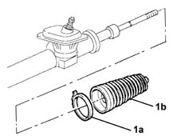

4120A30 l/h or r/h steering box boot (one) - replace at bench
- Path
- Procedures > 41 STEERING > 4120 STEERING BOX > 4120A rack and pinion steering box > 4120A30 l/h or r/h steering box boot (one) - replace at bench
- Kind
- repair procedure (removal / refitting; the operation number is the code)
- Applies to
- all engines; all production periods
- Interactive page
- https://sloeber94.github.io/elrnDB-lYpsln/en/#/2429226
Applies to: all engines; all production periods
 Removing
Removing
 Refitting
RefittingProceed with removal 4110B14 steering links - r+r with steering box removed .
1. Loosen the band (1a) and remove the steering box boot (1b).

Applies to: all engines; all production periods
Refitting
RemovingPlace a new steering box boot in its housing and secure it using a new band.
Proceed with refitting 4110B14 steering links - r+r with steering box removed .